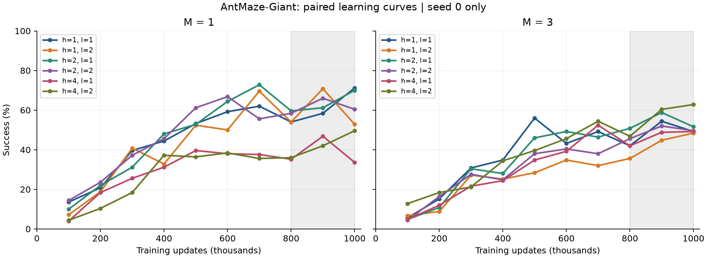
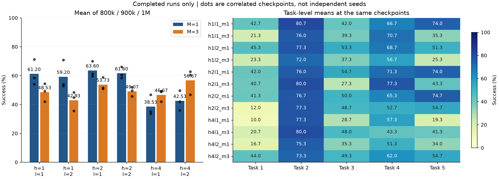
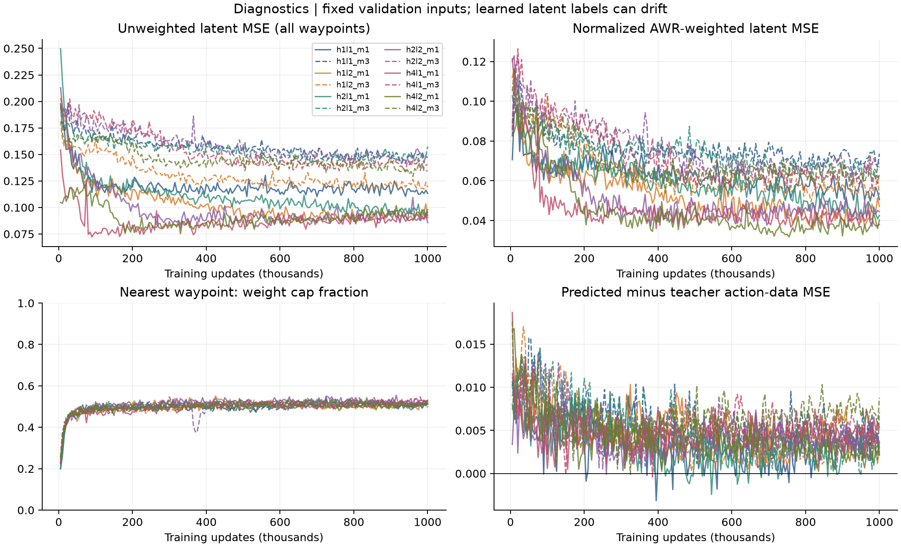
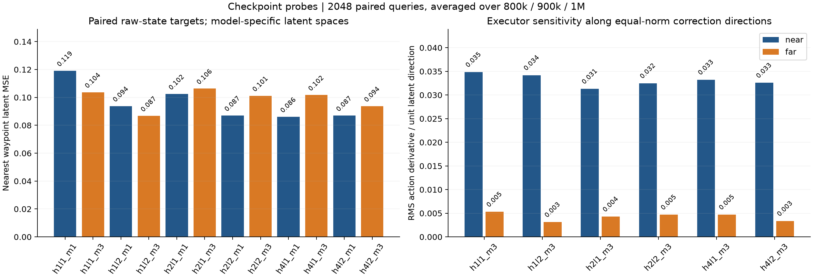
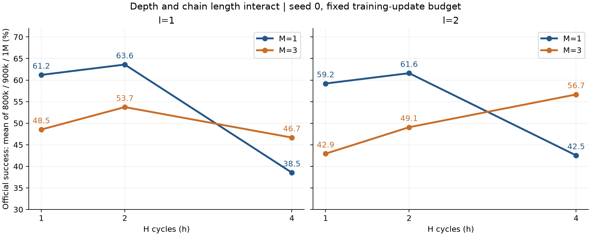
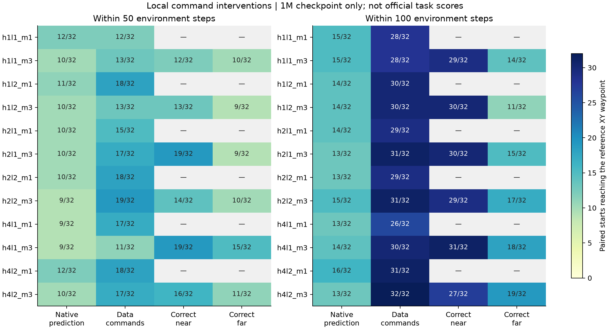
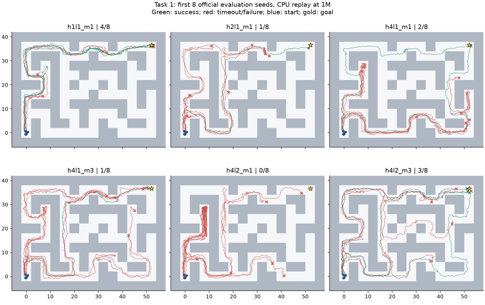
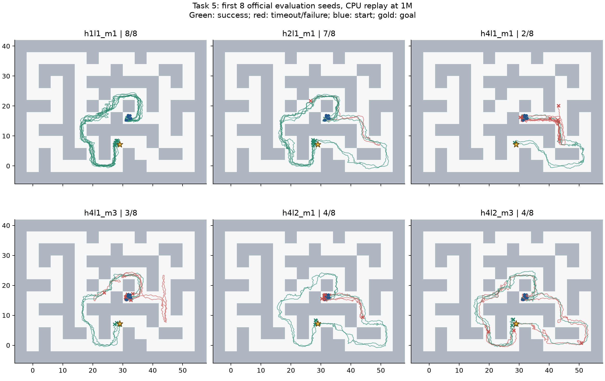

快照时间：2026-10-30T10:48:55.924674+08:00。{'completed': 12, 'running': 0, 'pending': 0, 'failed': 0}
仅 seed 0。主分数严格取 800k、900k、1M 的成功率均值；未完成组不以最后一次成绩替代主指标。灰色区间为主指标窗口。固定验证输入不等于固定 latent 标签：编码器也在学习。所有分析与训练隔离。
| 配置 | 状态 | 800000 | 900000 | 1000000 | 主分数 |
|---|---|---|---|---|---|
| hrm_h1l1_m1 | completed | 54.00% | 58.40% | 71.20% | 61.20% |
| hrm_h1l1_m3 | completed | 42.00% | 54.40% | 49.20% | 48.53% |
| hrm_h1l2_m1 | completed | 54.00% | 70.80% | 52.80% | 59.20% |
| hrm_h1l2_m3 | completed | 35.60% | 44.80% | 48.40% | 42.93% |
| hrm_h2l1_m1 | completed | 59.60% | 61.20% | 70.00% | 63.60% |
| hrm_h2l1_m3 | completed | 50.80% | 58.80% | 51.60% | 53.73% |
| hrm_h2l2_m1 | completed | 58.40% | 66.00% | 60.40% | 61.60% |
| hrm_h2l2_m3 | completed | 45.60% | 52.00% | 49.60% | 49.07% |
| hrm_h4l1_m1 | completed | 35.20% | 46.80% | 33.60% | 38.53% |
| hrm_h4l1_m3 | completed | 42.00% | 48.80% | 49.20% | 46.67% |
| hrm_h4l2_m1 | completed | 36.00% | 42.00% | 49.60% | 42.53% |
| hrm_h4l2_m3 | completed | 46.80% | 60.40% | 62.80% | 56.67% |


| 对照差值 | 百分点 |
|---|---|
| M3_minus_M1_h1l1 | -12.67 |
| M3_minus_M1_h1l2 | -16.27 |
| l2_minus_l1_h1M1 | -2.00 |
| l2_minus_l1_h1M3 | -5.60 |
| M3_minus_M1_h2l1 | -9.87 |
| M3_minus_M1_h2l2 | -12.53 |
| l2_minus_l1_h2M1 | -2.00 |
| l2_minus_l1_h2M3 | -4.67 |
| M3_minus_M1_h4l1 | +8.13 |
| M3_minus_M1_h4l2 | +14.13 |
| l2_minus_l1_h4M1 | +4.00 |
| l2_minus_l1_h4M3 | +10.00 |
| h2_minus_h1_l1M1 | +2.40 |
| h4_minus_h2_l1M1 | -25.07 |
| h4_minus_h1_l1M1 | -22.67 |
| h2_minus_h1_l1M3 | +5.20 |
| h4_minus_h2_l1M3 | -7.07 |
| h4_minus_h1_l1M3 | -1.87 |
| h2_minus_h1_l2M1 | +2.40 |
| h4_minus_h2_l2M1 | -19.07 |
| h4_minus_h1_l2M1 | -16.67 |
| h2_minus_h1_l2M3 | +6.13 |
| h4_minus_h2_l2M3 | +7.60 |
| h4_minus_h1_l2M3 | +13.73 |
上述差值是单种子的描述性结果，不是跨种子的统计显著性。三个 checkpoint 也不是三个独立 seed。改变 M 同时改变计划覆盖范围、目标数量、部分参数量和损失分配。h、l 改变循环计算量，不增加参数量；本轮比较固定训练更新次数，没有配平计算时间。

归一化加权 MSE 从固定单位方差 Gaussian NLL 扣除常数项后计算，并除以总有效权重。它用于拆分拟合误差和权重尺度，不改变训练目标。
同一组 2048 个离线查询，CPU 前向；每项为 800k、900k、1M 的均值。动作差异是敏感性指标，不是局部执行成功率。
| 配置 | 近端 MSE | 近端加权 MSE | 真值链动作 MSE | 预测链动作 MSE | 替换近端的动作变化 | 替换远端的动作变化 |
|---|---|---|---|---|---|---|
| hrm_h1l1_m1 | 0.1191 | 0.0616 | 0.0720 | 0.0778 | 0.01198 | 0.00000 |
| hrm_h1l1_m3 | 0.1037 | 0.0511 | 0.0731 | 0.0784 | 0.01604 | 0.00125 |
| hrm_h1l2_m1 | 0.0938 | 0.0444 | 0.0734 | 0.0785 | 0.01244 | 0.00000 |
| hrm_h1l2_m3 | 0.0867 | 0.0446 | 0.0760 | 0.0810 | 0.01314 | 0.00053 |
| hrm_h2l1_m1 | 0.1024 | 0.0503 | 0.0746 | 0.0796 | 0.01409 | 0.00000 |
| hrm_h2l1_m3 | 0.1063 | 0.0533 | 0.0739 | 0.0789 | 0.01446 | 0.00089 |
| hrm_h2l2_m1 | 0.0870 | 0.0402 | 0.0752 | 0.0789 | 0.00872 | 0.00000 |
| hrm_h2l2_m3 | 0.1012 | 0.0490 | 0.0747 | 0.0780 | 0.01435 | 0.00107 |
| hrm_h4l1_m1 | 0.0861 | 0.0450 | 0.0745 | 0.0795 | 0.00947 | 0.00000 |
| hrm_h4l1_m3 | 0.1017 | 0.0519 | 0.0752 | 0.0790 | 0.01522 | 0.00102 |
| hrm_h4l2_m1 | 0.0870 | 0.0436 | 0.0771 | 0.0809 | 0.00957 | 0.00000 |
| hrm_h4l2_m3 | 0.0937 | 0.0474 | 0.0776 | 0.0808 | 0.01364 | 0.00065 |

方向导数沿预测目标指向数据目标的方向计算，每个样本的方向范数归一到 1；不是任意方向的全 Jacobian 范数，也不等于闭环控制收益。

每个 h、l 条件都重新训练了整个 agent。本轮不是给同一个 checkpoint 增加推理次数，因此不能据此声称 test-time scaling。h、l 改变 HRM block 调用次数 h(l+1)。结构核验更正：planner 与 executor 的序列长度均为 M+3；M=1、3 均对应 4、6 个 token。planner 有 M+1 个 query，其中最后一个不直接读出，但参与联合计算。此前误写的 planner 3、5 个 token 已更正；实验数据不受影响。
12 个 1M checkpoint × 同一组 32 个起点。M=1 测 2 种输入，M=3 测 4 种输入，共 1,152 条轨迹。全部恢复状态与数据 observation 的最大偏差为 0。nearest waypoint 来自 t+50，最终目标来自 t+200；目标 XY 容差 0.5，最多执行 100 步。数据 command 保留完整 state，每步针对当前 observation 重新编码。

这测的是是否经过数据轨迹指定的近端 waypoint。直接预测的路线可以选择不同的有效路径，也会每步重新规划；数据 command 则一直指向固定参考 state。因此差值表示该参考目标下的可利用执行空间，不是正式任务收益或纯粹的 planner 错误率。50 步与 100 步结果差异也提示：给定数据目标，不代表 executor 一定在名义 Δ=50 内到达。
| 配置 | 替换方式 | 从失败到成功 | 从成功到失败 | 净变化/百分点 |
| hrm_h1l1_m1 | teacher | 17 | 4 | +40.6 |
| hrm_h1l1_m3 | teacher | 15 | 2 | +40.6 |
| hrm_h1l1_m3 | corrected_near | 15 | 1 | +43.8 |
| hrm_h1l1_m3 | corrected_far | 5 | 6 | -3.1 |
| hrm_h1l2_m1 | teacher | 16 | 0 | +50.0 |
| hrm_h1l2_m3 | teacher | 17 | 1 | +50.0 |
| hrm_h1l2_m3 | corrected_near | 17 | 1 | +50.0 |
| hrm_h1l2_m3 | corrected_far | 3 | 6 | -9.4 |
| hrm_h2l1_m1 | teacher | 17 | 2 | +46.9 |
| hrm_h2l1_m3 | teacher | 19 | 1 | +56.2 |
| hrm_h2l1_m3 | corrected_near | 18 | 1 | +53.1 |
| hrm_h2l1_m3 | corrected_far | 7 | 5 | +6.2 |
| hrm_h2l2_m1 | teacher | 17 | 1 | +50.0 |
| hrm_h2l2_m3 | teacher | 16 | 0 | +50.0 |
| hrm_h2l2_m3 | corrected_near | 16 | 2 | +43.8 |
| hrm_h2l2_m3 | corrected_far | 5 | 3 | +6.2 |
| hrm_h4l1_m1 | teacher | 18 | 5 | +40.6 |
| hrm_h4l1_m3 | teacher | 17 | 1 | +50.0 |
| hrm_h4l1_m3 | corrected_near | 18 | 1 | +53.1 |
| hrm_h4l1_m3 | corrected_far | 6 | 2 | +12.5 |
| hrm_h4l2_m1 | teacher | 16 | 1 | +46.9 |
| hrm_h4l2_m3 | teacher | 19 | 0 | +59.4 |
| hrm_h4l2_m3 | corrected_near | 15 | 1 | +43.8 |
| hrm_h4l2_m3 | corrected_far | 12 | 6 | +18.8 |
| 配置 | 近端 cap | 远端 cap | 近端/远端动作响应 | 近端系数份额 | 几何符号一致/近端 | 远距离样本一致/近端 |
| hrm_h1l1_m1 | 53.5% | 53.5% | — | 100.0% | 89.1% | 83.0% |
| hrm_h1l1_m3 | 54.0% | 64.0% | 6.57× | 38.1% | 89.7% | 84.0% |
| hrm_h1l2_m1 | 54.1% | 54.1% | — | 100.0% | 90.1% | 84.8% |
| hrm_h1l2_m3 | 53.5% | 63.9% | 10.96× | 38.1% | 87.7% | 80.3% |
| hrm_h2l1_m1 | 53.6% | 53.6% | — | 100.0% | 89.9% | 84.1% |
| hrm_h2l1_m3 | 54.1% | 63.2% | 7.30× | 38.4% | 89.4% | 82.5% |
| hrm_h2l2_m1 | 53.5% | 53.5% | — | 100.0% | 89.4% | 84.2% |
| hrm_h2l2_m3 | 53.9% | 64.0% | 6.91× | 38.2% | 89.1% | 82.5% |
| hrm_h4l1_m1 | 53.0% | 53.0% | — | 100.0% | 86.8% | 78.8% |
| hrm_h4l1_m3 | 53.9% | 63.7% | 7.04× | 38.2% | 88.7% | 81.6% |
| hrm_h4l2_m1 | 53.3% | 53.3% | — | 100.0% | 88.0% | 80.7% |
| hrm_h4l2_m3 | 53.1% | 63.1% | 9.68× | 38.1% | 89.3% | 83.2% |
近端系数份额是 ρʲE[wⱼ] 的归一化份额，不是实际梯度份额。M=3 的 loss 对近端单项额外除以 3，且近端只占总系数约 38%；但不同条件的 encoder、误差和梯度也不同，所以不能推断其梯度恰为 M=1 的三分之一。超过 cap 的样本失去相互间的权重区分，仍保留与低权重样本的区分。几何符号一致率只核对迷宫格点距离的进退，不评价动态可达性、价值校准或候选生成目标的排序能力。
这批 2048 个查询中，有 11.8% 的最远与最近 waypoint 索引相同，来自到目标/轨迹末端的截断。M=3 不代表每个样本都提供三个不同的状态；这一数字是诊断查询池的统计，不是全训练集比例。
| 配置 | 记录梯度中位数 | 95%分位 | 最大值 | 末期中位数 | 非 target 参数 | 每次 planner 的 block 调用 |
| hrm_h1l1_m1 | 173.0 | 257.2 | 401.7 | 169.6 | 3740126 | 2 |
| hrm_h1l1_m3 | 156.3 | 278.0 | 1003.4 | 141.3 | 3740916 | 2 |
| hrm_h1l2_m1 | 172.6 | 273.7 | 843.5 | 158.1 | 3740126 | 3 |
| hrm_h1l2_m3 | 172.1 | 248.2 | 425.1 | 162.8 | 3740916 | 3 |
| hrm_h2l1_m1 | 175.1 | 262.4 | 1158.2 | 169.8 | 3740126 | 4 |
| hrm_h2l1_m3 | 165.1 | 262.3 | 444.3 | 165.0 | 3740916 | 4 |
| hrm_h2l2_m1 | 180.9 | 276.1 | 573.6 | 161.7 | 3740126 | 6 |
| hrm_h2l2_m3 | 171.6 | 306.9 | 953.3 | 165.7 | 3740916 | 6 |
| hrm_h4l1_m1 | 188.2 | 308.4 | 423.3 | 173.6 | 3740126 | 8 |
| hrm_h4l1_m3 | 171.4 | 257.9 | 432.2 | 156.6 | 3740916 | 8 |
| hrm_h4l2_m1 | 191.8 | 288.7 | 391.0 | 175.5 | 3740126 | 12 |
| hrm_h4l2_m3 | 169.2 | 280.1 | 575.9 | 155.9 | 3740916 | 12 |
日志每 5,000 更新记录一次梯度统计，具体 grad/norm 为各参数张量 L2 范数之和，不是拼接后的全局 L2 范数。不能排除未记录步的尖峰，也没有分解到 H/L 或不同循环。所有已记录指标有限，h=4 的记录梯度没有呈现持续爆炸；这不证明内部推理收敛。M 增加只多出 790 个参数（约 0.021%），不能把 chain 效果解释成明显增加参数容量。双进程共享 GPU 的耗时受资源竞争影响，不作为严格计算效率基准。
补看 6 个配置在任务 1、5 上的前 8 个正式评估起点，共 96 条轨迹。沿用正式终止规则和种子，用 CPU 重算动作；原实验也设置了 eval_on_cpu=1。这里是新进程执行的诊断子集，不替换 50 次/任务的正式结果，也不把 8 次结果当作模型排名。
| 配置 | 任务 | 成功/8 | 平均最小剩余格点距离 | 平均最终剩余格点距离 |
| hrm_h1l1_m1 | 1 | 4/8 | 6.4 | 6.4 |
| hrm_h1l1_m1 | 5 | 8/8 | 0.0 | 0.0 |
| hrm_h2l1_m1 | 1 | 1/8 | 12.6 | 13.0 |
| hrm_h2l1_m1 | 5 | 7/8 | 1.4 | 1.6 |
| hrm_h4l1_m1 | 1 | 2/8 | 9.9 | 10.0 |
| hrm_h4l1_m1 | 5 | 2/8 | 10.2 | 11.5 |
| hrm_h4l1_m3 | 1 | 1/8 | 3.0 | 3.2 |
| hrm_h4l1_m3 | 5 | 3/8 | 9.4 | 9.9 |
| hrm_h4l2_m1 | 1 | 0/8 | 16.0 | 16.8 |
| hrm_h4l2_m1 | 5 | 4/8 | 7.9 | 7.9 |
| hrm_h4l2_m3 | 1 | 3/8 | 3.5 | 3.9 |
| hrm_h4l2_m3 | 5 | 4/8 | 3.1 | 3.9 |


复核：h2l1M1 在任务 1 的前 8 个起点只成功 1 次，不能据此改变它的正式排名。因此额外重跑了该 checkpoint 的全部 50 个正式起点，得到 28/50=56%，与原 eval.csv 完全一致。这也说明 8 条轨迹只能用于看失败形态，不能用于稳定估计成功率。
最明确的实验现象是循环深度与 chain 长度的交互。 h=1、2 的四对比较中，M=3 低于 M=1 9.87–16.27 个百分点；h=4 则反过来高 8.13 和 14.13 个百分点。尤其 l=2 时，M=3 随 h=1→2→4 为 42.93→49.07→56.67%，而 M=1 为 59.20→61.60→42.53%。
这个反转值得继续验证。所有配置只有 seed 0，三个 checkpoint 不是独立重复；当前结果支持一个具体可检验的现象，尚不能把它解释为多次推理必然更优。
当前最强模型是 h2l1M1；最强 chain 模型是 h4l2M3。 两者正式主分数分别为 63.60% 与 56.67%；h1l1M1 为 61.20%。h4l2M3、h1l1M1 在 1M 的单点成绩分别为 62.80% 和 71.20%，因此不能把最后一个点和末三个 checkpoint 均值混为一谈。
h2l1M1 比 h1l1M1 高 2.40 个百分点，暂不应据此断言两次 H 循环稳定优于一次。本轮没有相同协议下的原始 CoGHP 对照，尚不能判断新架构相对 CoGHP 的净收益。
深层模型的低成功率不能用 latent 拟合失败简单概括。 2048 个相同原始状态查询、三个 checkpoint 均值：h2l1M1 的近端 MSE 为 0.1024，h4l1M1 更低，为 0.0861，但正式成功率从 63.60% 降到 38.53%。预测误差约为常量预测误差的 10–15%，预测与目标的有效秩也相近，没有明显常量输出坍缩。记录到的总梯度也没有持续爆炸。
不同模型的 encoder 和 latent 度量不同，MSE 不是位置误差；总梯度每 5000 步才记录一次，不能证明各 H/L 内部状态或梯度完全正常。目前可以确认评价指标不足以刻画规划质量，不能确认深层失效的唯一机制。
近端 command 对执行的影响明显强于远端；局部可执行性是值得聚焦的接口问题。 六组 M=3 的等范数纠正方向探针中，近端/远端动作方向导数 RMS 比为 6.57–10.96。1M checkpoint 在同样 32 个数据起点上，100 步内经过参考近端 waypoint 的原生预测比例为 13–15/32，替换近端后为 27–31/32；替换远端为 11–19/32。
方向导数只测指定纠正方向，远端 token 仍可能影响 planner 的内部计算和近端输出。局部测试比较固定数据目标与原生逐步重规划，且只检验参考 XY waypoint；不同有效路线、目标冻结和混合 chain 一致性都会影响结果。不能把这些增益写成正式导航成功率提升。
局部结果与长程结果不一致，提示需要同时检查路线选择、持续推进和末端到达。 局部原生预测在 12 个配置之间仅为 13–16/32，无法解释正式成功率 38.53–63.60% 的差异。任务 5 的轨迹图能看到绕墙成功、起点附近停滞、换入其他通道后往返等不同现象；任务 1 的部分 chain 轨迹已接近目标但在 1000 步预算内未成功。
任务图只抽取 6 个配置、2 个任务、各 8 个固定起点，供定性观察。额外完整复跑 h2l1M1 的任务 1 得到 28/50=56%，与原始日志一致；其前 8 个起点仅 1/8，说明不能用小子集重新给模型排名。
当前 high loss 的信号分配存在可分析、可单独检验的设计张力。 M=3 的 high loss 按 M 归一化，近端单项系数含 1/3；在这批查询上，近端约占总加权系数的 38%，其余约 62% 分给两个远端位置。与此同时 executor 的动作响应更依赖近端。权重上限 100 的触发率约为近端 53–54%、远端 63–64%，较多高权重样本之间不再区分权重大小。
这些是目标函数及样本权重的事实，不是实际梯度分配，也不能证明提高近端权重必然有益。h=1 的 M=3 近端 MSE 反而更低，说明简单的‘近端没拟合好’解释不成立。应保留现有 loss 作对照，单独检验位置配比或执行相关监督，避免同时改 critic、encoder 和 executor。
现有 critic 具有粗略进展信号，但本轮尚未验证它能在线评价生成计划。 相同离线查询上，近端 advantage 与迷宫格点进展的非平局符号一致率为 86.8–90.1%；距离目标至少 10 格的查询降为 78.8–84.8%。远端一致率约 91.7–92.3%。
这不测价值校准、动态可达性、整条轨迹一致性或生成候选的排序。当前 critic 只在训练时给数据目标提供 AWR 权重，没有参与在线推理。因此这轮结果无法直接证明需要某种新 high value/map，也不能证明旧 value 已经足够。
下一步应围绕已观察到的交互和接口问题进行最小实验。 第一优先是在少量配对配置上补 seed，并准备相同协议的 CoGHP 基线。若优先复验交互，可固定 l=2，只补 h∈{1,4}、M∈{1,3} 四格。第二步对固定 checkpoint 的各次 H 更新使用同一读出头诊断近端/远端输出和执行响应，对应此前记录的共享读出头想法。第三步再以固定 h、l、M 进行单因素 high loss 对照。
中间循环未受直接监督，不要求其质量单调提高；读出只是诊断，不自动增加 deep supervision。h 扫描是分别训练不同循环预算的模型，不是同一模型的 test-time scaling。这份分析没有更改训练模型或启动下一轮训练。
原始日志快照、逐文件 SHA256、配置和 checkpoint metadata 位于 snapshot/；冻结代码已逐文件校验。结构化结果在 analysis.json；checkpoint 探针在 checkpoint_probes_extended.json（若运行）。地图仅用于几何进展诊断，不进入模型输入。分析脚本副本及其 SHA256 位于 analysis_code/ 和 analysis_provenance.json。
原始实验：/data/qijunrong/06-RL/offline-rl/exp/joint_planner_v0_antmaze_giant_width32_seed0_20261029